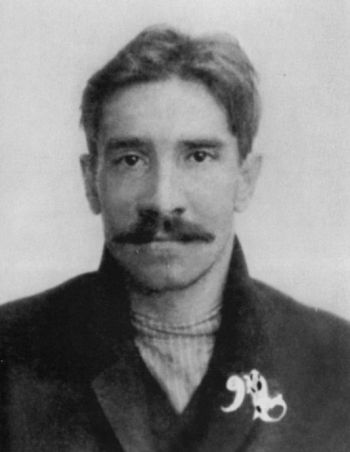

|

Александр Грин (настоящее имя — Александр Степанович Гриневский; 11 [23] августа 1880, Слободской, Вятской губернии, Российской империи — 8 июля 1932, Старый Крым, СССР) — русский писатель-прозаик, поэт, представитель неоромантизма, автор философско-психологических, с элементами символической фантастики, произведений. Начал печататься в 1906 году, всего опубликовал около 400 произведений.
Создатель вымышленной страны, которая благодаря критику К. Зелинскому получила название «Гринландия». В этой стране происходит действие многих его произведений, в том числе самых известных его романтических книг — романа «Бегущая по волнам» и феерии «Алые паруса».
Художественные и идейные особенности прозы Грина:
Грин открыто дидактичен, то есть его произведения основаны на ясной системе ценностей и предлагают читателю принять и разделить с автором эти идеалы.
Общепризнано, что Грин — романтик, «рыцарь мечты». Мечту Грин понимает как стремление духовно богатого человека к высшим, истинно человеческим ценностям, противопоставляя их бездушию, жадности и животным удовольствиям. Трудный выбор между этими двумя путями и последствия сделанного выбора — одна из важных тем у Грина. Его цель — показать, как органичны для человека добро и мечта, любовь и сострадание, и как разрушительны зло, жестокость, отчуждение. Критик Ирина Васюченко отмечает редкостную прозрачность и чистоту нравственной атмосферы, свойственной прозе Грина. «Автор больше чем верит в могущество добрых начал жизни — он его знает». Существуя одновременно в реальном мире и в мире мечты, Грин ощущал себя «переводчиком между этими двумя мирами». В «Алых парусах» автор, устами Грея, призывает «творить чудо» для другого человека; «Новая душа будет у него и новая у тебя». В «Блистающем мире» аналогичный призыв: «Введите в свою жизнь тот мир, блёстки которого уже даны вам щедрой, тайной рукой».
Среди инструментальных средств Грина — прекрасный вкус, чуждый натурализму, способность простыми средствами возвысить рассказ до уровня глубокой притчи, яркий захватывающий сюжет. Критики отмечают, что Грин невероятно «кинематографичен». Перенос действия в вымышленную страну — также продуманный приём: «Грину важен по большому счёту человек и только человек вне его связи с историей, национальностью, богатством или бедностью, религией и политическими убеждениями. Грин как бы абстрагирует, очищает своих героев от этих наслоений и стерилизует свой мир, потому что так человек ему лучше виден».
Писатель сосредоточен на борьбе в человеческой душе и с удивительным мастерством изображает тончайшие психологические нюансы. «Объём знаний Грина в этой области, точность изображения сложнейших психических процессов, подчас превосходящих уровень представлений и возможности его времени, вызывают сегодня удивление специалистов».
«Грин говорил, что, бывает, часы проводит над фразой, добиваясь наивысшей полноты её выражения, блеска». Он был близок к символистам, которые пытались расширить возможности прозы, дать ей больше измерений — отсюда частое употребление метафор, парадоксальные сочетания слов и т. д.
Образец гриновского стиля на примере из «Алых парусов»:
Она умела и любила читать, но и в книге читала преимущественно между строк, как жила. Бессознательно, путём своеобразного вдохновения она делала на каждом шагу множество эфирно-тонких открытий, невыразимых, но важных, как чистота и тепло. Иногда — и это продолжалось ряд дней — она даже перерождалась; физическое противостояние жизни проваливалось, как тишина в ударе смычка, и всё, что она видела, чем жила, что было вокруг, становилось кружевом тайн в образе повседневности.
|